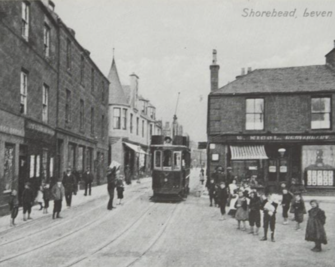
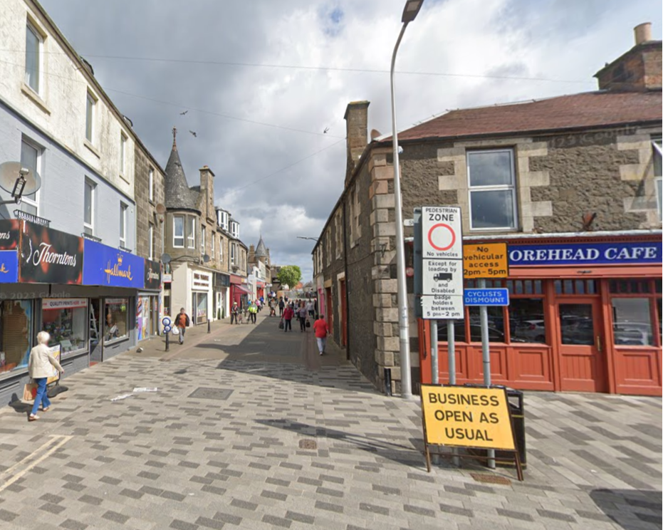

Leven Highstreet, 1906
A Timeline of Leven's History
- 11th Century - First mention of the Leven area when Bishop Tudal of St. Andrews gifts the church of Sconyn to the Culdees of Loch Leven.
- 1435 - Oxen carcasses are delivered to King James III in Falkland through River Leven from Blackness.
- 1565 - First proof of settlement around the mouth of River Leven as Henry Durie is appointed "Keeper of the harbour at Levynnismouth".
- 1609 - In possession of the Archbishopric of St. Andrews, the town is elevated to a Burgh of Barony.
- 1614 - Leven and Innerleven are established and are owned by Sir Alexander Gibson.
- 18th Century - The burgh is thriving and the main industries are handloom weaving, salt extraction, coal mining, a rope factory and a bleachworks.
- 1835 - The opening of 5 spinning mills caused a decine in the handloom weaving industry, and an iron foundry replaces the bleachworks.
- 1854 - The railway from Leven to Thornton is opened and attracts many tourists to the beautiful seaside town.
- 1861 - The Fife Directory shows nineteen rooms are open for tourists in the summertime, indicating that tourism is a profitable industry for the town.
- 1868 - An 18 hole golf course is built on the links at Leven, and the clubhouse is built 20 years after opening.
- 19th Century - The town expanded in response to industrial and tourism demand. Many of the older 18th and 17th century buildings are demolished to accommodate new stores and Villas by the seaside.
- 1906 - The Wemyss and District Tramway is established and connects Leven to Kirkcaldy, 7.45 miles away.
- 1969 - The railway line from Leven to Thornton is closed at the same time as the collapse of coal mining.
- Present Day - Leven has great road links to the rest of Fife and continues to be a hotspot for tourism. Following the collapse of the coal mining industry, the main industry in Leven lies within the drinks manufacturing industry. After years of campaigning, the railway to Thornton is currently being rebuilt (March 2024). It will connect Leven to Edinburgh and will hopefully allow more people to come and visit the beautiful town.

Leven Highstreet, 2023